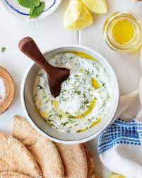

Tzatziki

A light and refreshing dip for hot summer days
This mediteranean appetizer dish is great for hot days, packed with light and refreshing ingredients this is a great
mid day snack! Best enjoyed with some fresh pita bread.
Ingredients
- 2 cups plain Greek yogurt (optional - strain with cheese cloth)
- 1 cup shredded or diced cucumber
- 2 tablespoons lemon juice or white wine vinegar
- 2 cloves of garlic minced
- 1 tablespoon of chopped dill
- Salt and Pepper to taste